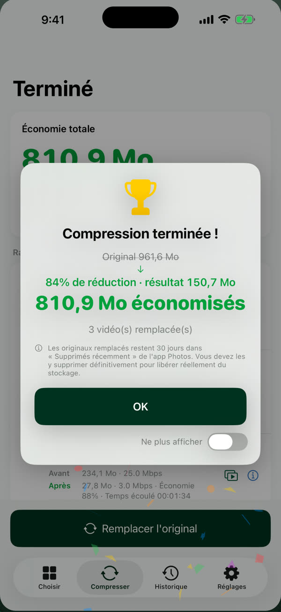
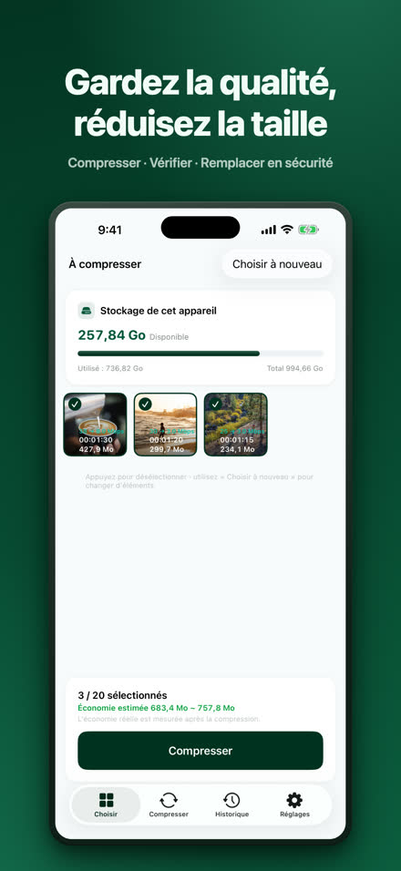
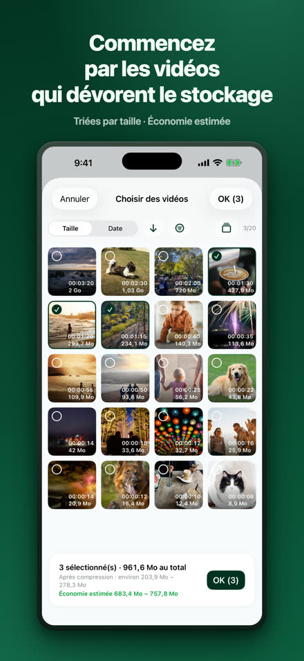
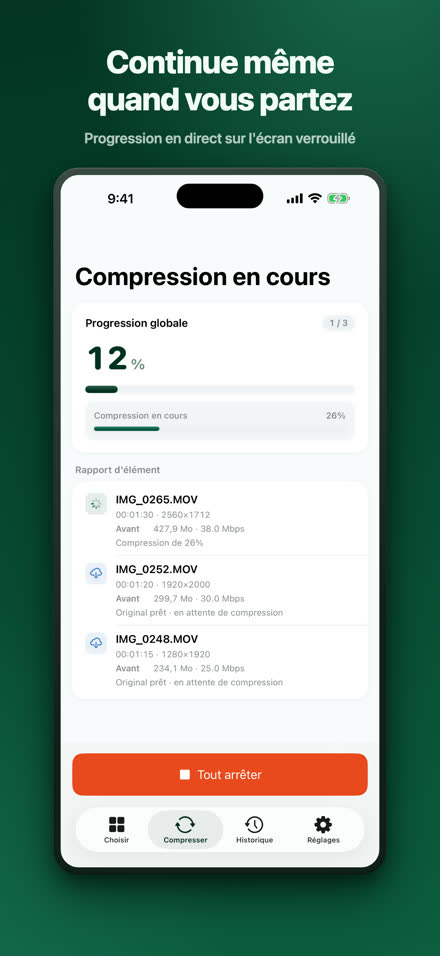
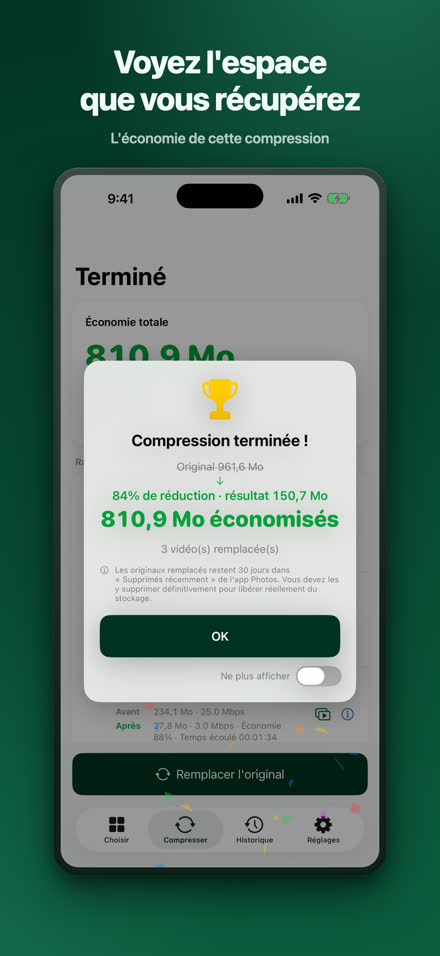
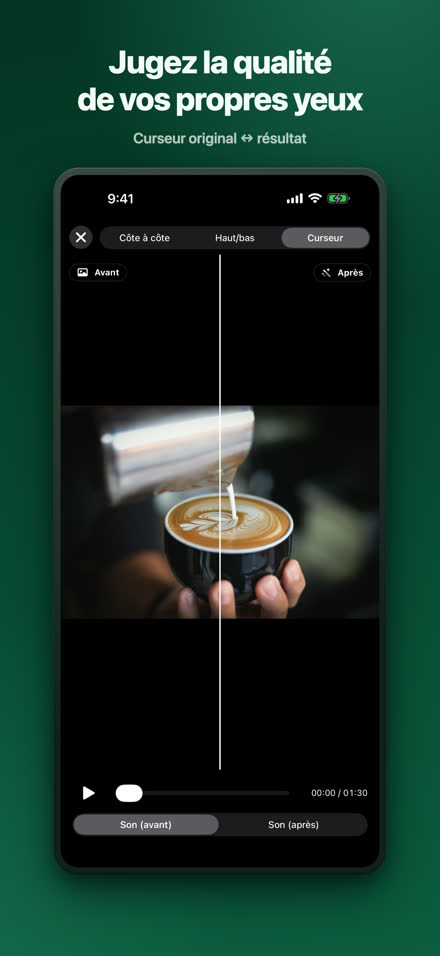
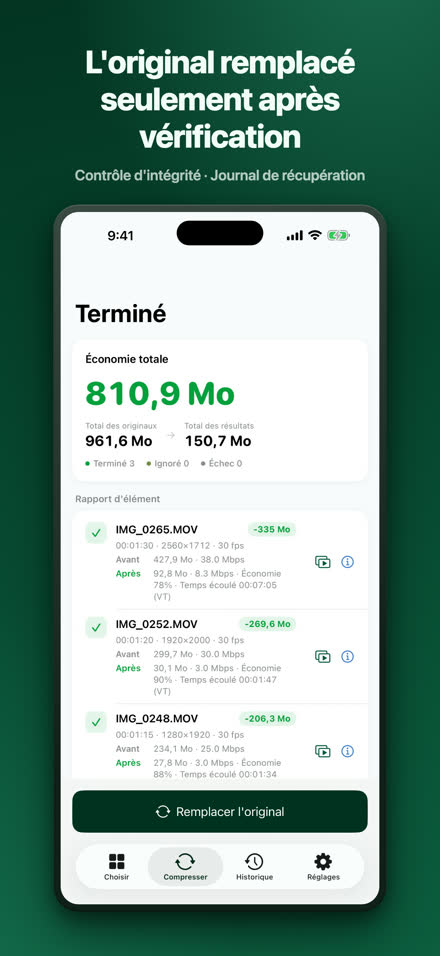
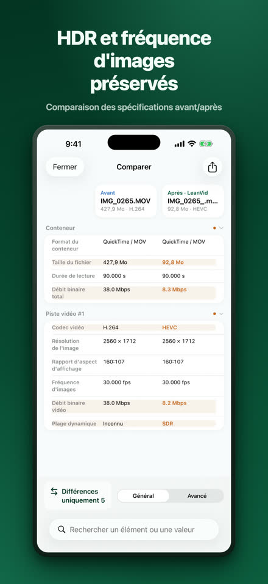
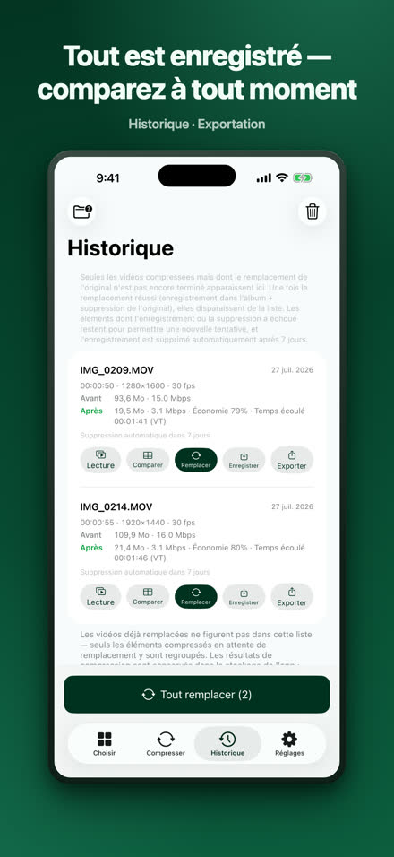

Réduisez vos vidéos, gardez la qualité.
LeanVid compresse les vidéos de votre photothèque et de l’app Fichiers en ne réduisant que le débit — résolution, cadence, couleurs et HDR restent intacts. Chaque résultat est vérifié avant de remplacer l’original, et les originaux de la photothèque restent récupérables pendant 30 jours.
Télécharger dans l’App StoreiOS 18 ou version ultérieure · iPhone et iPad (fonctionne aussi sur les Mac Apple silicon en tant qu’app iPad)

La même vidéo, pour une fraction de l’espace.
Notre test : un enregistrement d’écran de 3 min 34 s. Le résultat varie selon la vidéo.
Choisir, compresser, vérifier, remplacer.








Tout ce qu’il faut, intégré.
débit binaire uniquement ; HDR et toutes les pistes préservés
contrôles d’intégrité, journal de récupération, confirmation système
comparaison côte à côte et au curseur, tableau détaillé des caractéristiques
choisissez des vidéos dans Sur mon iPhone ou iCloud Drive ; les fichiers MKV, WebM, AVI, WMV, FLV, TS, MPG et VOB sont convertis en HEVC/MP4 sur votre appareil
compression en arrière-plan avec progression via Live Activity (iOS 26 ou version ultérieure). Sur les versions antérieures, elle reprend automatiquement à votre retour dans l’application
vos vidéos sont compressées sur votre iPhone et ne sont jamais téléversées ; aucun compte requis — Confidentialité